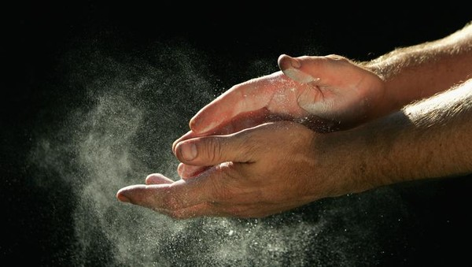

Memuat panduan bersuci…
Pelajari tata cara bersuci secara lengkap dan benar — mulai dari pengertian, dalil dari Al-Qur'an dan Hadits Sahih, rukun, sunnah, hingga hal-hal yang membatalkannya.
يٰٓاَيُّهَا الَّذِيْنَ اٰمَنُوْٓا اِذَا قُمْتُمْ اِلَى الصَّلٰوةِ فَاغْسِلُوْا وُجُوْهَكُمْ وَاَيْدِيَكُمْ اِلَى الْمَرَافِقِ وَامْسَحُوْا بِرُءُوْسِكُمْ وَاَرْجُلَكُمْ اِلَى الْكَعْبَيْنِۗ وَاِنْ كُنْتُمْ جُنُبًا فَاطَّهَّرُوْاۗ وَاِنْ كُنْتُمْ مَّرْضٰٓى اَوْ عَلٰى سَفَرٍ اَوْ جَاۤءَ اَحَدٌ مِّنْكُمْ مِّنَ الْغَاۤىِٕطِ اَوْ لٰمَسْتُمُ النِّسَاۤءَ فَلَمْ تَجِدُوْا مَاۤءً فَتَيَمَّمُوْا صَعِيْدًا طَيِّبًا فَامْسَحُوْا بِوُجُوْهِكُمْ وَاَيْدِيْكُمْ مِّنْهُۗ مَا يُرِيْدُ اللّٰهُ لِيَجْعَلَ عَلَيْكُمْ مِّنْ حَرَجٍ وَّلٰكِنْ يُّرِيْدُ لِيُطَهِّرَكُمْ وَلِيُتِمَّ نِعْمَتَهٗ عَلَيْكُمْ لَعَلَّكُمْ تَشْكُرُوْنَ
"Wahai orang-orang yang beriman! Apabila kamu hendak melaksanakan shalat, maka basuhlah wajahmu dan tanganmu sampai ke siku, dan usaplah kepalamu dan (basuh) kedua kakimu sampai kedua mata kaki. Jika kamu dalam keadaan junub, mandilah. Dan Jika kamu sakit atau dalam perjalanan atau kembali dari tempat buang air (kakus), atau menyentuh perempuan, lalu jika kamu tidak memperoleh air, bertayamumlah dengan debu yang baik (suci); usaplah wajahmu dan tanganmu dengan (debu) itu. Allah tidak ingin menjadikan bagimu sedikit pun kesulitan, tetapi Dia hendak membersihkan kamu dan menyempurnakan nikmat-Nya bagimu agar kamu bersyukur."
(QS. Al-Ma'idah: 6)
Mensucikan diri dengan air bersih

Mensucikan diri dengan tanah atau debu yang bersih
Bersuci menggunakan air bersih dengan tata cara yang telah disyariatkan.
Secara bahasa, wudhu (الوضوء) berarti bersih dan indah. Menurut istilah syariat, wudhu adalah membasuh dan mengusap anggota tubuh tertentu dengan air suci (bersih) yang mensucikan disertai dengan niat dan bertujuan untuk menghilangkan hadats kecil sebagai syarat sah beribadah.
يَا أَيُّهَا الَّذِينَ آمَنُوا إِذَا قُمْتُمْ إِلَى الصَّلَاةِ فَاغْسِلُوا وُجُوهَكُمْ وَأَيْدِيَكُمْ إِلَى الْمَرَافِقِ وَامْسَحُوا بِرُءُوسِكُمْ وَأَرْجُلَكُمْ إِلَى الْكَعْبَيْنِ
"Wahai orang-orang yang beriman! Apabila kamu hendak melaksanakan shalat, maka basuhlah wajahmu dan tanganmu sampai ke siku, dan sapulah kepalamu dan (basuh) kakimu sampai ke kedua mata kaki."
— QS. Al-Ma'idah: 6Berniat dalam hati untuk menghilangkan hadats kecil karena Allah ﷻ.
Mengucapkan "Bismillāh" sebelum memulai.
Mencuci kedua telapak tangan sebanyak 3 kali.
Berkumur dan memasukkan air ke hidung lalu mengeluarkannya sebanyak 3 kali.
Membasuh seluruh wajah dari batas rambut hingga dagu sebanyak 3 kali.
Membasuh kedua tangan hingga ke siku, dimulai dari kanan sebanyak 3 kali.
Mengusap kepala dari depan ke belakang lalu kembali, dilanjutkan mengusap kedua telinga.
Membasuh kedua kaki sampai mata kaki, dimulai dari kanan sebanyak 3 kali.
أَشْهَدُ أَنْ لَاإِلٰهَ إِلَّااللهُ وَحْدَهُ لَاشَرِيْكَ لَهُ وَأَشْهَدُ أَنَّ مُحَمَّدًاعَبْدُهُ وَرَسُوْلُهُ. اَللّٰهُمَّ اجْعَلْنِيْ مِنَ التَّوَّابِيْنَ وَاجْعَلْنِيْ مِنَ الْمُتَطَهِّرِيْنَ
"Aku bersaksi bahwa tidak ada Tuhan selain Allah Yang Maha Esa, tidak ada sekutu bagi-Nya, dan aku bersaksi bahwa Nabi Muhammad adalah hamba dan utusan Allah. Ya Allah, jadikanlah aku termasuk dalam golongan orang-orang yang bertobat dan jadikanlah aku termasuk dalam golongan orang-orang yang bersuci (shalih)."
Bersuci menggunakan debu bersih sebagai pengganti wudhu dan mandi ketika tidak ada air atau tidak mampu menggunakannya.
Secara bahasa, tayamum (التيمم) berarti menyengaja. Menurut syariat, tayamum adalah menyengaja (mengusap) wajah dan kedua tangan menggunakan tanah atau debu (permukaan bumi) yang suci dengan niat tertentu sebagai pengganti dari wudhu atau mandi.
فَلَمْ تَجِدُوا مَاءً فَتَيَمَّمُوا صَعِيدًا طَيِّبًا فَامْسَحُوا بِوُجُوهِكُمْ وَأَيْدِيكُمْ مِنْهُ
"Lalu jika kamu tidak memperoleh air, maka bertayamumlah dengan debu yang baik (suci); usaplah wajahmu dan tanganmu dengan debu itu."
— QS. Al-Ma'idah: 6Mencari tanah atau debu (permukaan bumi) bersih yang mengandung debu suci (seperti tembok atau kaca).
Berniat dalam hati untuk bertayamum agar diperbolehkan shalat.
Mengucapkan "Bismillāh" sebelum memulai.
Menepukkan kedua telapak tangan ke permukaan tanah atau debu yang suci sebanyak satu kali.
Meniup kedua telapak tangan jika debu berlebih.
Mengusap seluruh wajah dengan kedua telapak tangan sebanyak satu kali.
Menepukkan kembali kedua telapak tangan ke permukaan tanah atau debu yang suci sebanyak satu kali.
Mengusap punggung tangan kanan dengan telapak kiri, lalu sebaliknya, sampai pergelangan tangan.
أَشْهَدُ أَنْ لَاإِلٰهَ إِلَّااللهُ وَحْدَهُ لَاشَرِيْكَ لَهُ وَأَشْهَدُ أَنَّ مُحَمَّدًاعَبْدُهُ وَرَسُوْلُهُ. اَللّٰهُمَّ اجْعَلْنِيْ مِنَ التَّوَّابِيْنَ وَاجْعَلْنِيْ مِنَ الْمُتَطَهِّرِيْنَ
"Aku bersaksi bahwa tidak ada Tuhan selain Allah Yang Maha Esa, tidak ada sekutu bagi-Nya, dan aku bersaksi bahwa Nabi Muhammad adalah hamba dan utusan Allah. Ya Allah, jadikanlah aku termasuk dalam golongan orang-orang yang bertobat dan jadikanlah aku termasuk dalam golongan orang-orang yang bersuci (shalih)."
Ringkasan perbedaan dan persamaan dari kedua cara bersuci.
| Aspek | Wudhu | Tayamum |
|---|---|---|
| Media Bersuci | Air suci dan mensucikan | Tanah atau debu yang suci |
| Kondisi | Saat air tersedia dan mampu digunakan | Saat tidak ada air atau ada udzur (sakit, dingin parah) |
| Jumlah Rukun | 6 rukun | 4 rukun |
| Anggota yang Dibasuh atau Diusap | Wajah, tangan, kepala, kaki | Wajah dan kedua tangan saja |
| Pengulangan | Boleh diulang 3 kali (sunnah) | Cukup satu kali usapan |
| Masa Berlaku | Selama belum batal | Selama belum batal & belum menemukan air |
| Dalil Utama | QS. Al-Ma'idah: 6 (bagian awal) | QS. Al-Ma'idah: 6 (bagian akhir) |
| Niat | Wajib | Wajib |
Klik setiap pertanyaan untuk melihat jawabannya.
Jika air hanya cukup untuk minum atau kebutuhan vital, maka diperbolehkan bertayamum. Namun jika air mencukupi untuk wudhu walau sedikit, wajib digunakan terlebih dahulu sebelum bertayamum.
Menurut pendapat yang kuat (jumhur ulama), satu kali tayammum hanya berlaku untuk satu shalat fardhu. Namun boleh digunakan untuk shalat-shalat sunnah setelahnya selama belum batal.
Ya, tertib termasuk rukun wudhu dan tayamum berdasarkan urutan yang disebut dalam QS. Al-Ma'idah: 6. Jika tidak tertib, maka wudhu atau tayamumnya tidak sah.
Tidur ringan (mengantuk) di mana kesadaran masih ada tidak membatalkan wudhu. Yang membatalkan adalah tidur nyenyak hingga hilangnya kesadaran (HR. Abu Dawud no. 200).
Boleh, selama benda tersebut berasal dari permukaan bumi dan suci, seperti pasir, batu, tanah, atau dinding tanah/semen yang berdebu. Yang utama adalah sha'idan thayyiba (permukaan bumi yang suci).
Tidak wajib, selama wudhu belum batal. Namun memperbarui wudhu setiap shalat adalah sunnah dan mendapat pahala besar.
Ya. Cat kuku membentuk lapisan yang menghalangi air sampai ke kulit/kuku, sehingga wudhu tidak sah. Harus dibersihkan terlebih dahulu sebelum berwudhu (bersuci).